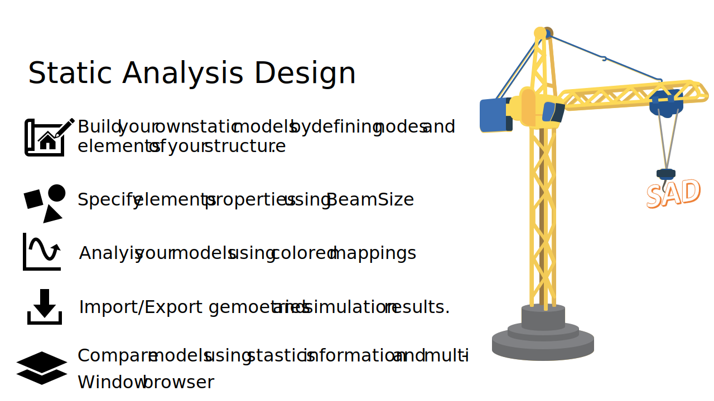

Beamon Documentation¶
Beamon is an open-source-based development in the institute of structural analysis and lightweight design at RWTH University in Aachen. Beamon Static Analysis Design (SAD) is mainly a graphical finite element program for modeling static structural systems and simulating those using the direct stiffness method.

Beamon In A Glance¶
Users or specifically designers are capable of defining node coordinates and structure boundary conditions (Structural support).
Elements are connection information between nodes. In this context, a static model should build a Graph.
Each element has modifiable local system orientation and properties, profiles.
Designers can apply external forces on structures such as, nodal forces or constant element forces.
Geometries can be exported and imported as modifiable text files (ASCII-Symbols).
Simulation results summed up in section forces and displacements for each element, and support forces and displacements for each node can be viewed in tables and exported as Excel or CSV files.
Many models can be viewed simultaneously in separate windows. A project overview shows a report for each model.